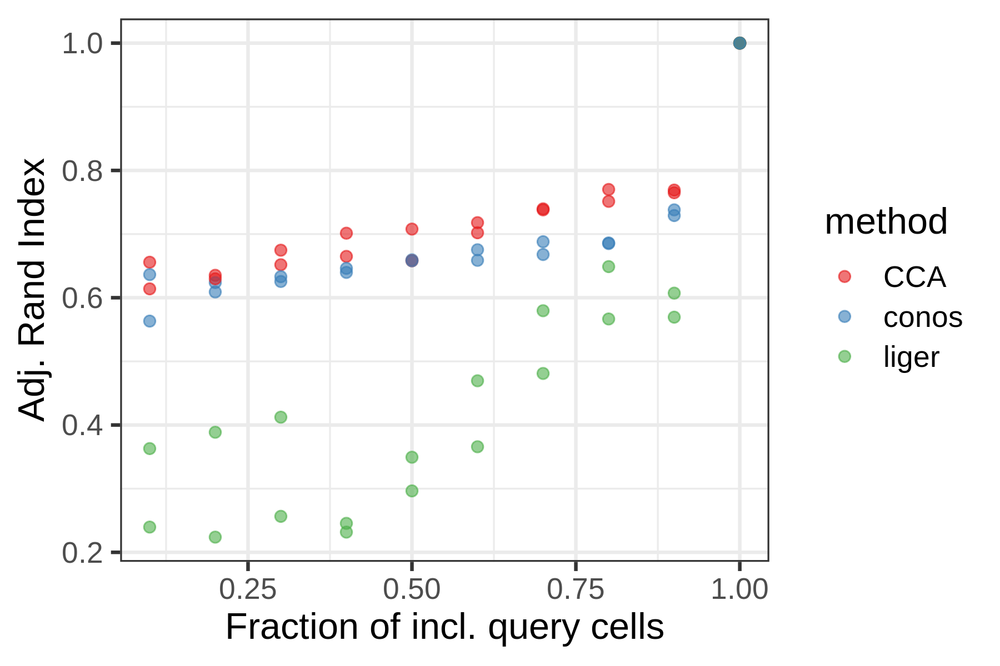
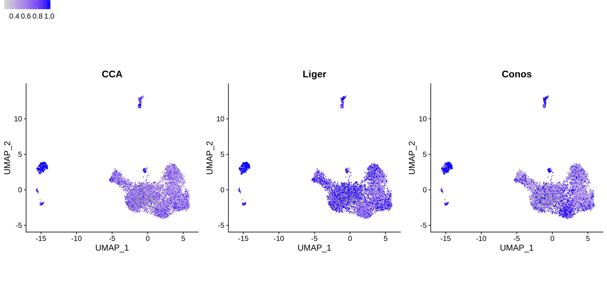

2 Results
2.1 Designing a bechmark for label transfer methods: PBMC dataset
We run our initial benchmark on a publicly available dataset of Peripheral Blood Mononuclear Cells (PBMC) downloaded from the 10XGenomics website.
We first evaluate the ability of different methods to transfer cell type annotations derived from scRNA-seq data to scATAC-seq data of the same tissue (See Methods 4.5.1 for details about label transfer procedure for each method).
Figure 2.1: Varying fraction of query cells

Visualizing the predicted label assignments on the embedding of ATAC cells based on the bin x cells matrix, we find that for all the methods the label assignment have some coincidence with the clusters from ATAC data alone.
Figure 2.2: UMAP of ATAC
All integration methods measure the uncertainty of their assignment (Fig.2.3A). Setting a threshold on the label prediction score allows to remove from downstream analysis cells with a low confidence prediction label, and mark them as unasssigned. We found that at the cutoff of 0.5, suggested by (???), Liger excludes the least amount of cells, while Conos scores the most cells with higher confidence (Fig.2.3B).
Figure 2.3: Distribution of prediction scores for each method
Figure 2.4: Fraction of cells assigned to labels.
We wanted to evaluate if the predicted annotations maintain the structure found when clustering cells based on bin accessibility alone, i.e. if cells that have a similar bin accessibility profile also get annotated with the same cell type. For each cell we measure the fraction of the K nearest neighbors that share the same predicted label (KNN score). Looking at the distributions of KNN scores, we find that Liger maintains the original connectivity structure better, followed by Conos and finally CCA, even if the differences are not that substantial. Also the KNN score is dependent on the assigned cell type.

Figure 2.5: Cumulative distributions of KNN scores
We checked accessibility of PBMC marker genes in the called cell types. We found that cell populations called with CCA show accessibility of expected marker genes from transcriptomics, for NK cells, monocytes, CD8+ cells, and the platelets even.
Figure 2.6: Accessibility of markers in predicted cell clusters
2.2 Optimizing label transfer on Thymus dataset
2.2.1 Label transfer on count gmat
Figure 2.7: UMAP of predicted labels for thymus dataset
Figure 2.8: Prediction scores for thymus dataset

Cell type composition
Figure 2.9: Predicted cell type compositions for thymus dataset

Figure 2.10: KNN agreement score for thymus dataset
Figure 2.11: Accessibility of known thymic markers in predicted cell types
Trying to reproduce accessibility profiles of ordered T-cell populations (see Fig. 2H of JP’s manuscript).
- Good: TOX2, ST18, SATB1 on the entry cells, cyclin D genes,
- Weird: CD8 accessibility for CD4 cells (possibly wrongly assigned double positives?)
Figure 2.12: Accessibility of known T-cells markers in predicted cell types
2.3 What next?
- Evaluate label transfer for different cluster sizes
- Label transfer w bigger clusters provided by Cecilia
- MATCHER comparison: CCA seems able to reconstruct the main differences between differentiating T-cells. Will MATCHER find the same relationships between cells?
- Integration w imputation instead of label transfer
- Performance comparison on matched joint profilinf of ATAC - RNA on the same cells